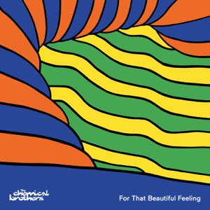

15/09/2023
Thoughts on For That Beautiful Feeling by The Chemical Brothers

I've been a fan of The Chemical Brothers for a few years now, ever since around the release of their previous album, No Geography. I used to consider it as my favourite album by the duo, but as I delved more into their music, my preferences changed to their older works, such as Surrender and Dig Your Own Hole. I still held a soft spot for the album that originally got me into them, however. When their newest album, For That Beautiful Feeling was announced, it instantly became one of my most anticipated albums for this year, so I caught up on the previously released singles before the album dropped.
No Reason and Live Again are both great dance tracks, though the latter took a bit to grow on me due to awkward mixing on a vocal sample early on. Eventually, I got used to it, and the mixing for that sample also seemed to get better further into the track. Live Again also features vocals from Halo Maud, who also does vocals on the closing track.
The biggest surprise of this album for me was Skipping Like A Stone. Beck's previous feature, Wide Open is one of the weaker tracks on Born In The Echoes, so I didn't have high expectations, especially when the new track began with what sounded like the beginning to Dire Straits - Money For Nothing without the drum solo. Once the song truly began, however, my opinion changed entirely, and the track became my favourite off of the album.
My other two highlights off the album are Magic Wand and The Weight, which both feel like modern incarnations of tracks that could have appeared on Dig Your Own Hole, or even their debut album, Exit Planet Dust.
There is one odd inclusion on this album, and that is a remix of the single from 2020, The Darkness That You Fear. Not only do I just prefer the original version of the track over this remix, but it just feels odd to put a 3-year-old release on this album. I would've probably cut it from the album, but that would cause a very jarring transition from Skipping Like A Stone to Feel Like I'm Dreaming.
The final track, the title track, is pretty good. I don't think it's the duo's strongest album closer, that would likely go to The Private Psychadelic Reel, but it's solid.
Overall, For That Beautiful Feeling is a great album, and I might even prefer it over No Geography, as I feel more aspects of the album rival The Chemical Brothers' best work from the '90s.